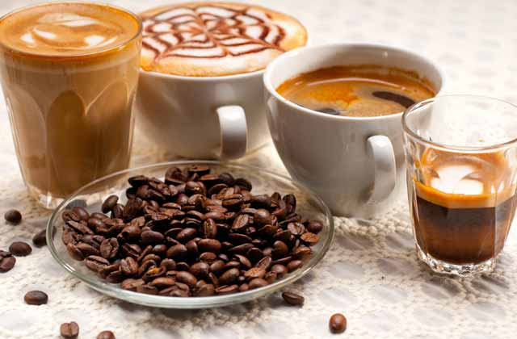

Kahve Çeşitleri

Gün içerisinde arkadaşlarınızla oturup sohbet etmek için gittiğiniz bir
kafede, menüyü istediğinizde onlarca kahve çeşidiyle karşılaşabilirsiniz. Bu
kahvelerin adını bilmenizin yanı sıra içeriğini, nasıl yapıldığını, içerisine ne
konulduğunu bilmek, vereceğiniz siparişin damak tadınızı karşılamada
daha doğru bir tercih yapmanıza olanak tanıyacaktır. Fakat ilk olarak kahve
çeşitlerini değil kahve çekirdeklerini tanımakta yarar var.
Satın aldığınız hazır kahve paketlerinde veya gittiğiniz kafelerde sipariş
verdiğiniz kahvelerin üzerinde genellikle Arabica veya Single Origin
yazılarını görürsünüz. Bunlar; kahve çekirdeklerine verilen isimler. Dünya
üzerinde temelde iki adet tür bulunuyor; Arabica ve Robusta. Arabica,
Robusta’ya göre daha yüksek bölgelerde yetişen, bakımı zor bir türdür.
Üstelik daha lezzetlidir. Yetiştiği bölgeye göre çiçek, çikolata vb. aromalar
da kahvenin içerisine işleyebilir. Robusta ise Arabica’ya nazaran daha
yüksek kafein miktarına sahiptir. Daha alçak bölgelerde yetişen, zorlu
koşullara dayanıklı bir tür olan Robusta, endüstriyel üretime de son derece
uygundur. Robusta daha çok harman kahvelerde kullanılır.
Single Origin ifadesi ise içtiğiniz kahvenin harman olmadığını, tümünün tek
bir bölgede yetiştirildiğini tanımlayan bir ifadedir. Genellikle kafelerde denk
gelebileceğiniz House Blend, Office Blend gibi harmanlar ise kahvenin
içerisine farklı aromalarda kahve çekirdeklerinin karıştırıldığını ifade eder.
Kahve çeşitleri ise temelde üçe ayrılır; Espresso bazlı kahveler, filtre kahve
ve çözünebilir kahve. Son yıllarda zenginleşen kahve kültürüyle birlikte
soğuk kahveyi de bu üçlünün yanına ekleyebiliriz.
Espresso
Sıkıştırılmış ve ince öğütülmüş kahveyle birlikte 90 dereceliksuyun 30
saniye boyunca, 9 bar basınçla demlenmesiyle hazırlanıyor. Espresso, 30
mL’lik shot bardaklarında servis edilir. Elektrikli makinelerin yanı sıra ocak
üstünde moka pot aracılığıyla da Espresso hazırlayabilirsiniz. İtalyanlara
özgü olan Espresso, diğer birçok kahvenin de ana malzemesini oluşturuyor.
Americano

Espresso’dan daha yumuşak, filtre kahveden ise daha sert içimi olan
Americano kısaca, Espresso’nun sıcak suyla seyreltilmiş halidir.
Americano’nun sertlik miktarını, Espresso miktarı, Espresso içerisinde
bulunan kahve miktarı ve su miktarı ile rahatça ayarlayabilirsiniz.
Americano, adından kaynaklı olarak Amerika Birleşik Devletleri’nde içilmeye
başlandığı düşünülebilir. Fakat hikaye biraz daha farklı. 2. Dünya Savaşı
sırasında Amerikan askerleri, Espresso ile tanışırlar. Kendilerine yoğun, sert
ve az gelen Espresso’ya sıcak su ekleyerek kendi damak tatlarına uygun
hale getirirler. Böylelikle farkında bile olmadan günümüze kadar ulaşmayı
başaran Americano’nun temellerini atarlar.
Cappuccino
Espresso, süt ve süt köpüğüyle hazırlanan Cappuccino adını, Capuchin
rahiplerinden alıyor. Espresso’dan daha hafif, Latte’den daha sert olan
Cappuccino’yu hazırlamak için her bir fincana bir shot Espresso eklenir.
Daha sonra süt, 70 dereceye kadar ısıtılır. Burada önemli olan nokta, sütün
üzerinde 2 – 3 santimetreye kadar köpük oluşturabilmektir. Sonrasında
ısıtılan süt, Espresso’ya eklenir. Cappuccino’nuza sunum zenginlikleri
katmak istiyorsanız, çikolata parçacıkları ekleyebilirsiniz.
Frappe

Frappe ilk olarak 1957 senesinde Nestle’nin çocuklara yönelik hazırladığı
çikolatalı içecek sayesinde ortaya çıkmıştır. Yunanistan’da yapımına
başlanan Frappe için hazır kahveye sıcak değil, soğuk su ekleniyor. 2 tatlı
kaşığı çözünebilir kahve, şeker ve 3 yemek kaşığı soğuk suyu, shaker veya
mikser yardımıyla karıştırın. Elde ettiğiniz karışımın yarısını uzunca bir
bardağa dökün. Üzerine 7 – 8 adet buz küpü ekleyin. Sonrasında soğuk süt
ve suyu ilave edin. Karışımdan kalan köpüğü de bardağın üzerine
eklediğinizde Frappe’niz hazır. Dilediğiniz takdirde içeceğinizi bir miktar
krema veya bir top dondurmayla zenginleştirebilirsiniz.
Latte
çimi oldukça hafif olan Latte, 1/3 veya 1/5 oranında Espresso’ya süt
eklenmesiyle hazırlanır. Üzerine de süt köpüğü konularak servis edilir. İlk
olarak buharda ısıtılmış süt bardağa konulur. Süte 1 shot Espresso eklenir
ve sütten kalan köpük, bardağın üzerine eklenerek Latte sunuma hazır hale
getirilir.
Macchiato
Sert ve aromalı bir tada sahip olan Macchiato, Espresso’ya köpüklü süt
ilave edilerek hazırlanır. Sıcak süt, mikser yardımıyla köpük haline
getirildikten sonra 1 shot Espresso’nun üzerine ilave edilir. Dilerseniz,
üzerine Hindistan cevizi ekleyerek servis edebilirsiniz. Macchiato, Long
Macchiato ve Latte Macchiato olarak kendi içerisinde ikiye ayrılır. Long
Macchiato, 2 shot Espresso ile hazırlanır ve süt köpüğüne ek olarak bir
miktar sıcak eklenir. Latte Macchiato ise Latte ile Macchiato arasındaki
tatta bir içecek türüdür.
Mocha
Adını Yemen’de bulunan Mucha Limanı’ndan alan Mocha, 1/3 oranında
Espresso ile 2/3 oranında süt ile hazırlanır. Latte ve Cappuccino’dan farkı
ise Mocha’da çikolata şurubu veya tozu bulunuyor. Bardağın içerisine
çikolata şurubu veya tozu koyuyorsunuz. Ardından sıcak sütü ilave edip,
son olarak da oldukça yavaş bir biçimde, bardağın kenarından Espresso’yu
ekliyorsunuz. Çırptığınız sütten elde ettiğiniz süt köpüğünü de kahveye
eklediğinizde Mocha, servise hazır hale geliyor. Farklı tatlar arayanlar
kahvesine, vanilya şurubu veya karamel gibi aromalar da katabilirler.
Marocchino

İtalya’da oldukça fazla tüketilen Marocchino, 1 shot Espresso, süt köpüğü
ve Hindistan cevizi tozuyla hazırlanıyor. 1 Shot espresso üzerine süt
köpüğünü ekleyin, son olarak da Hindistan cevizi tozunu ilave ederek
kahvenizi sunuma hazır hale getirebilirsiniz. Hindistan cevizi tozuna ek
olarak kahvenize kakao tozu da ilave edebilirsiniz.
Filtre Kahve
Öğütülmüş kahve, metal veya kağıt filtre yardımıyla sıcak sudan geçirilerek
demlenir. French Press’te hazırlayacaklar ise cam kap içerisine sıcak su ve
öğütülmüş kahveyi koyup, bir süre demlendikten sonra metal filtre
yardımıyla süzerek filtre kahveyi hazır hale getirebilirler. Dünya üzerinde en
çok tüketilen kahve olan filtre kahveye dilerseniz süt, şeker veya krema
ilave edebilirsiniz.
Çözünebilir Kahve
Espresso ve filtre kahve demlediğiniz zaman geriye kalan posa çöpe atılır.
Çözünebilir kahvede ise posa, asıl malzemeyi oluşturur. Kahve tozunu sıcak
suya ekleyip karıştırdığınız takdirde kahveniz hazır demektir. Ancak
çözünebilir kahve, pek çok endüstriyel süreçten geçtiği için aromasını ve
doğallığını kaybeder. Çoğu ülke, yavaş yavaş çözünebilir kahve tüketimini
azaltma yoluna gitmektedir.
Soğuk Kahve

Kahve demlerken sürekli olarak sıcak su kullandığımızdan dolayı kahvenin
içerisinde yer alan pek çok yağ asidi çözünür. Bu da kahveye acı bir tat
verir. Soğuk kahve hazırlarken kullandığımız su da soğuk olduğu için bu yağ
asitleri çözünmez ve kahve daha yumuşak içimli olur. Soğuk kahve
demlemek için temelde kullanabileceğiniz 3 farklı yöntem bulunuyor.
Bunlar; Cold Drip, Cold Brew ve Ice Cold Coffee olarak karşımıza çıkıyor.